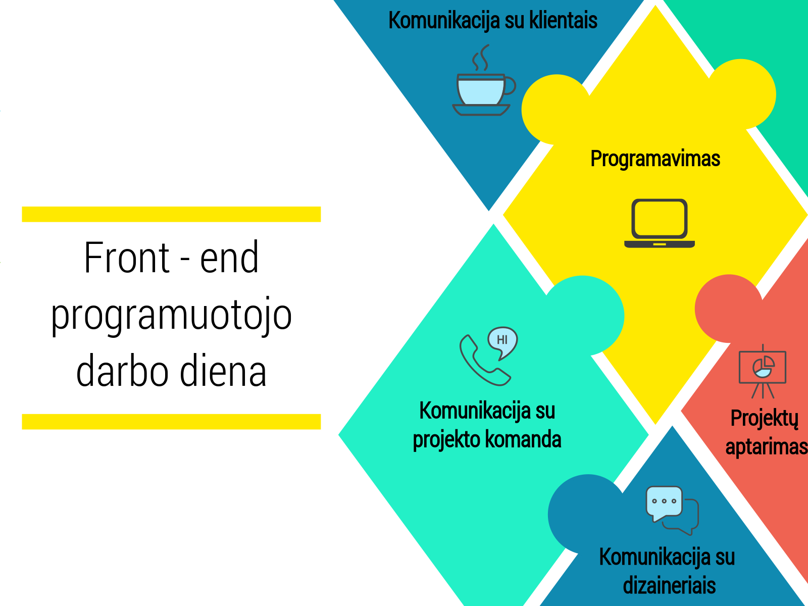

Front-end programuotojas
Front-end programuotojas atsakingas už tai, ką vartotojas mato interneto svetainėjė ir kaip gali su ja sąveikauti (paspausti mygtukus, nuorodas, įrašyti ir gauti informaciją). Front-end programuotojas diegia dizainerio sukurtą svetainės vaizdą, rašo kodą bei juo perteikia sukurtą dizainą, jog vartotojas turėtų sklandžią patirtį internetiniame puslapyje. Front-end programavimas yra perspektyvi, nuolat tobulėjanti ir besivystanti sritis, kur technines žinias galima derinti su kūrybiškumu.
